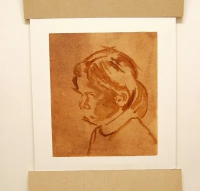

Ruční a digitální malba
V prvním ročníku jste se naučili vidět tvar, prostor a světlo. Teď k tomu přidáte barvu. V prvním pololetí malujete vodovkami a akvarelem, ke konci pololetí přejdete na grafické tablety a ve druhém pololetí malujete digitálně ve Sketchbooku a ve Photoshopu. Na tomto webu najdete teorii, interaktivní ukázky, návody na nastavení programů a vybraná videa.
Tematický plán 2026/27Čtyři bloky, dvě pololetí
Web kopíruje tematický plán předmětu. Ruční malba probíhá v učebně B201, digitální malba v učebně s grafickými tablety a programy Adobe. Celkem 99 hodin.
1. pololetí – ruční malba
Vodovky a akvarel na čtvrtce A3: práce s vodou a barvou, teplé a studené barvy, tóny, zátiší, draperie, portrét, figura a kompozice.
Konec 1. a celé 2. pololetí – digitální malba
Sketchbook na školních tabletech Samsung Galaxy, Photoshop se školními tablety Wacom Intuos, případně vlastní tablet. Výstup vždy A3, 300 DPI, JPEG v CMYK.
Základy malby, práce s barvou
základní techniky · 12 hodin
Portrét, figura, další témata
anatomie člověka · 18 hodin
Digitální malba
tablety, Sketchbook, Photoshop · 24 hodin
Dějiny umění
15 období, vždy s cvičením · 45 hodin
Výtvarné pomůckyCo si koupit
Povinné pomůcky na Grafickou tvorbu ve 2. ročníku si pořizujete sami. Grafické tablety na digitální malbu vám zapůjčí škola – vlastní tablet je dobrovolný.
Povinné pomůcky ruční malba
- Vodovkysada alespoň 12 barev; lepší školní akvarelové barvy jsou výhodou
- Vlasové štětcekulaté, několik velikostí (např. č. 4, 8, 12) + jeden plochý
- 30 kusů kreslicích čtvrtek A3silnější čtvrtka (ideálně 220 g/m² a víc) se tolik nevlní
- Nádobka na voduideálně dvě – na oplach a na čistou vodu
- Hadříkna osušení štětce a vytírání barvy
- Igelit na stůlochrana lavice před vodou a barvou
- Lepicí páskapapírová – na napnutí čtvrtky k podložce
- Osobní skicákvýtvarný deník – každý týden alespoň jeden záznam
- Měkké tužky 6B–8Bna lehkou přípravnou kresbu pod malbu
- Gumy Mapedměkká guma, která nepoškodí papír
- Ořezávátko kovové
- Desky na výkresyformát A3 – malby se nesmí zmačkat
Tablety zapůjčuje škola
Na digitální malbu nemusíte nic kupovat. Ve škole jsou připravené tablety Samsung Galaxy s perem a aplikací Sketchbook a počítače s Photoshopem a tablety Wacom Intuos. Jak je nastavit, popisuje etapa Tablet, A3 a export CMYK.
Chcete vlastní tablet?
- Tablet bez displeje (pen tablet, např. Wacom Intuos, XP-Pen, Huion) se připojí k počítači. Je nejlevnější, ale chce trochu cviku – kreslíte na stůl a díváte se na monitor.
- Tablet s displejem kreslí přímo do obrazu. Pohodlnější, dražší, potřebuje počítač.
- Samostatný tablet s perem (Android, iPad) funguje bez počítače s aplikacemi jako Sketchbook nebo Procreate.
Rozhodující je citlivost na přítlak pera a funkční ovladač pro váš systém. Před koupí se klidně poraďte s vyučujícím.
Jak se hodnotíPraxe, deník a teorie
Shrnutí pravidel klasifikace předmětu GT pro třídu 2.G ve školním roce 2026/27. Úplné znění najdete ve sdílené složce předmětu.
Praktická cvičení
Za celý rok namalujete minimálně 20 praktických výtvarných cvičení podle zadání z tematického plánu. Hodnotí se perspektiva, proporce, plošná a prostorová kompozice, práce s barvami, psychologie barev a zvládnutí druhů malby.
Výtvarný deník
Povinnou součástí průběžné práce je pravidelné předkládání osobního výtvarného deníku – alespoň jeden výtvarný záznam každý týden.
Teorie
Nejvýše dva písemné testy za rok (jeden za pololetí) z výtvarné teorie a terminologie. Kvízy na konci etap vám pomohou se připravit.
Absence a opravy
Všechna cvičení i testy je nutné splnit a za dobu nepřítomnosti doplnit, a to i při distanční výuce. Známky si lze opravit. Výsledná známka je vážený průměr s přihlédnutím k aktivitě.
Užitečné odkazyKam dál
Zdrojové soubory a předlohy, navazující výukové weby, soutěže a obrazové nástěnky.
Obrazové nástěnky na Pinterestu
Barva, voda a papír
Akvarel a vodovky jsou průsvitné vodové barvy. Světlo do obrazu nedává bílá barva, ale papír, který prosvítá vrstvami pigmentu. Malíř proto ovládá hlavně vodu: kolik jí je ve štětci, kolik na papíře a kdy nechat vrstvu zaschnout. Než se pustíte do zadání, vyzkoušejte si základní techniky – na papíře i v laboratoři níže.
- úvodZkušební arch technik: plochá a přechodová lavírka, mokré do mokrého, lazura
- B201Ruční malba ve výtvarné učebně
Vodovky, nebo akvarel?
Obojí je jemně mletý pigment pojený arabskou gumou a ředěný vodou. Rozdíl je hlavně v kvalitě: školní vodovky mají méně pigmentu a více plnidel, barvy jsou méně syté a hůř se vrství. Akvarelové barvy (v pánvičkách nebo tubách) obsahují víc a jemnějšího pigmentu, jsou zářivější a lépe snášejí lazury. Všechno, co se tu naučíte, platí pro obojí.
Papír
Čím je papír silnější, tím víc vody unese, aniž by se zvlnil. Na vodovky stačí kvalitní kreslicí čtvrtka, pro akvarel je ideální speciální akvarelový papír (300 g/m²). Papír před malbou přilepte páskou po celém obvodu k podložce – po zaschnutí zůstane rovný a získáte čistý bílý okraj.
Štětce
- Kulatý vlasový štětec je univerzální – široce položený maluje plochy, špičkou detaily. Stačí tři velikosti: malá, střední, velká.
- Plochý štětec se hodí na rovnoměrné lavírky a oblohu.
- Dobrý štětec drží hodně vody a po namočení se sám stáhne do špičky. Po malbě ho umyjte a nechte schnout naležato nebo špičkou nahoru.
Voda je hlavní nástroj
Poměr barvy a vody určuje světlost tónu. Tento poměr si pamatujte jako „čaj – káva – mléko – smetana“:
- Čaj – hodně vody, málo barvy. První lazury, obloha, vzdálené plány.
- Káva – střední tóny, většina ploch.
- Mléko – sytější barva pro stíny.
- Smetana – skoro čistá barva, jen na tmavé akcenty.
Základní technikyŠest způsobů, jak položit barvu
Namalujte si všechny na jeden arch A3 a popište je. Tento „vzorník technik“ budete používat celý rok.
Plochá lavírka
Rovnoměrná plocha jednoho tónu. Papír mírně nakloňte, malujte vodorovné pruhy širokým štětcem a každý další pruh navazujte na ještě mokrý okraj předchozího.
Přechodová lavírka
Tón plynule slábne do ztracena. Po každém pruhu přidejte do štětce víc čisté vody. Typická pro oblohu – nahoře sytá, k horizontu světlá.
Mokré do mokrého
Papír nejdřív navlhčete čistou vodou, pak do něj vpusťte barvu. Rozlije se do měkkých, neostrých tvarů a barvy se na papíře samy promíchají. Mraky, mlha, rozostřené pozadí.
Mokré do suchého
Mokrou barvou malujete na suchý papír. Tahy mají ostré, jasné okraje. Tak malujete tvary, detaily a vše, co má být v obraze zřetelné.
Lazura
Průsvitná vrstva barvy přes úplně zaschlou spodní vrstvu. Barvy se mísí opticky – žlutá pod modrou dá zelenou. Lazurami prohlubujete stíny a sjednocujete barevnost.
Vytírání a efekty
Do mokré barvy můžete savým papírem nebo suchým štětcem vytřít světlo (mraky, odlesky). Kuchyňská sůl na mokré ploše vytvoří hvězdičkovou texturu, cákanec štětcem oživí okraje.
Interaktivní laboratořAkvarel na obrazovce
Malujte myší nebo prstem. Simulace počítá s vodou na papíře: do mokrých míst se barva rozlévá, na suchém papíře má ostré okraje a schne do tmavšího lemu. Vyzkoušejte si „mokré do mokrého“ (nejdřív čistá voda, potom barva) a lazuru (vrstva přes zaschlou barvu).
Akvarelová laboratoř
malujte po papířeJak malovat akvarelem krok za krokem
- Lehká kresba měkkou tužkou, jen obrysy hlavních tvarů. Tvrdé a tmavé čáry by prosvítaly.
- Vyznačte světla – místa, kam nesmí barva. Případně je zakryjte maskovací tekutinou.
- První lazura přes velké plochy: světlé, řídké tóny („čaj“), klidně mokré do mokrého.
- Nechte zaschnout. Mezitím si na zkušebním proužku namíchejte další tóny.
- Střední tóny – lokální barvy předmětů a vlastní stíny („káva“).
- Tmavé tóny a akcenty – vržené stíny, nejtmavší místa, detaily („smetana“).
- Odstupte a porovnejte. Raději skončete o krok dřív, než obraz „přemalujete“.
Dvě ukázky postupu: jednotlivé fáze malby vedle sebe. Klepnutím zvětšíte.
Nejčastější chyby
Vzorník akvarelových technik
Rozdělte formát A3 na šest až devět polí. Do každého namalujte jednu techniku a pod ni ji tužkou popište. Do posledních polí namalujte malý motiv (strom, mrak, kapku), u kterého techniky zkombinujete.
- Přilepte čtvrtku páskou k desce.
- Lehce tužkou rozvrhněte pole s okraji.
- Plochá lavírka, přechodová lavírka, mokré do mokrého.
- Mokré do suchého, lazura dvou barev, vytírání.
- Malý motiv – kombinace technik.
Obrazové ukázkyAkvarel v praxi
Stromy, obloha, zvířata. Všimněte si, kolik bílého papíru malíři nechávají a jak se okraje tvarů ztrácejí do vody. Kliknutím obrázek zvětšíte, šipkami listujete.
VideotutoriályPodívejte se, jak na to
Anglická videa mají titulky – v přehrávači YouTube zapněte ozubené kolo → Titulky → Automaticky přeložit → čeština.
Zkontrolujte seKrátký kvíz
Teorii budete potřebovat v pololetním testu.
Teplé a studené, světlé a tmavé
Každá barva má tři vlastnosti: odstín (jakou má „jméno“ – červená, modrá), jas (jak je světlá) a sytost (jak je čistá a intenzivní). Ve dvou kompozičních cvičeních si vyzkoušíte, jak s nimi pracovat: nejdřív s teplotou barev, potom se světlostí tónů.
- 3 hKompoziční barevné cvičení s teplými a studenými barvami
- 3 hKompoziční barevné cvičení se světlými a temnými tóny
Barva jako počitek
Barvu vnímáme očima jako světlo o vlnové délce zhruba 400–700 nm. Přes zrak přijímáme asi 80 % informací o okolí – barva nám pomáhá rozpoznat tvary, prostor i náladu.
- Odstín je základní barva ze spektra s vlastním názvem.
- Jas (světlost) je postavení barvy na stupnici od bílé k černé.
- Sytost je intenzita barvy – čistá modrá je sytá, šedomodrá málo sytá.
- Primární barvy malíře – červená, žlutá, modrá – nenamícháte z jiných.
- Sekundární barvy vzniknou smícháním dvou primárních: oranžová, zelená, fialová.
- Doplňkové (komplementární) barvy leží v barevném kruhu proti sobě. Vedle sebe tvoří největší kontrast, smíchané se ztlumí do šedé.
Teplé, studené a neutrální
- Teplé barvy – žlutá, oranžová, červená. Působí blízko, opticky vystupují, jsou energické.
- Studené barvy – modrá, modrozelená, modrofialová. Ustupují do hloubky, uklidňují. Při úbytku světla se barvy posouvají k modré (slunce za mrakem).
- Klidné barvy – odstíny zelené a zelenomodré. Vzrušivé – červenooranžové, červené, purpurové.
- Neutrální barvy – stupnice šedých od bílé po černou.
- Kolorit je celkový barevný dojem z obrazu – vlastní výběr odstínů a tónů typický pro malíře nebo epochu.
- Vzdušná perspektiva – se vzdáleností barvy ztrácejí jas, sytost i kontrast, modrají a šednou. Tak vzniká iluze hloubky krajiny.
Interaktivní barevný kruhVztahy mezi barvami
Klikněte na barvu v kruhu a přepínejte typ barevného vztahu. P = primární, S = sekundární, T = terciární barva.
Barevný kruh malíře
klikněte na barvuLaboratoř mícháníCo vznikne z vodovek
Vyberte dvě barvy ze školní sady, nastavte poměr a množství vody. Vpravo uvidíte výsledek i jeho světlost v šedi. Míchání pigmentů je subtraktivní – každá barva pohlcuje část světla, proto se směsi spíš ztmavují a ztrácejí sytost.
Míchání dvou barev
simulace – skutečné pigmenty se mohou lišitKompoziční cvičení s teplými a studenými barvami
Namalujte kompozici (zátiší, krajinu, interiér nebo abstraktní kompozici), ve které proti sobě postavíte teplou a studenou barevnost. Jedna skupina musí převládat, druhá ji doplňuje jako kontrast.
- Rozhodněte, co bude teplé (motiv, světlo) a co studené (pozadí, stíny).
- Udělejte si do skicáku dvě až tři malé barevné skici a vyberte nejlepší.
- Lehká kresba na A3, první lazury mokré do mokrého.
- Teplé barvy dejte do popředí a do světel, studené do hloubky a stínů – nebo záměrně naopak.
- Na závěr zkontrolujte, že teplá i studená část mají světlé i tmavé tóny.
Kompoziční cvičení se světlými a temnými tóny
Tentokrát nejde o barvu, ale o světlost. Namalujte motiv tak, aby obsahoval celou tónovou stupnici – od bílého papíru po nejtmavší tón. Můžete malovat i jen jednou barvou (sépie, modrá) – vznikne monochrom.
- Namalujte si na okraj stupnici pěti tónů téže barvy.
- Ve skice rozdělte motiv na tři skupiny: světlé, střední, tmavé plochy.
- Malujte od nejsvětlejšího tónu a každý další tón přidávejte přes zaschlou vrstvu.
- Nejtmavší tón položte vedle nejsvětlejšího v místě, kam chcete přitáhnout pohled.
Interaktivní nástrojTónový hledáček
Vyberte ukázku, nebo nahrajte fotku své malby z mobilu (zůstane jen ve vašem prohlížeči). Posuvníkem nebo tažením po obraze porovnáte originál s převodem do šedi, do tří či pěti tónů nebo s mapou teplých a studených barev.
Kontrola tónů a teploty
táhněte po obrazeKterá barva je světlejší?
Sytá barva nás často oklame – zdá se světlá, a přitom je ve stupních šedi tmavá. Klikejte na barevné čtverce v pořadí od nejsvětlejší po nejtmavší. Po posledním kliknutí se barvy převedou do šedi a uvidíte, jak jste odhadli jejich světlost.
Seřaďte podle světlosti
Obrazové ukázkyTeplota a tón v malbě
Ukázky ke cvičením a pomůcky z teorie barev.
VideotutoriályBarva a tón
Zapněte si titulky a automatický překlad do češtiny.
Zkontrolujte seKrátký kvíz
Teorii budete potřebovat v pololetním testu.
Zátiší a draperie
Z prvního ročníku znáte krychli, válec a kouli v perspektivě a jejich stínování tužkou. Teď je namalujete barvou. Uvidíte, že stín není jen „tmavší šedá“: má vlastní barvu, odráží barvy okolí a na látce vytváří rytmus záhybů.
- 3 hMalba jednoduchého geometrického zátiší
- 3 hMalba draperie
Světlo a stín na tělese
- Světlo – část tělesa přivrácená ke zdroji světla. V akvarelu nejsvětlejší lazura nebo čistý papír.
- Odlesk – nejsvětlejší bod na lesklém povrchu. Vždy nechte bílý papír.
- Polostín – přechod mezi světlem a stínem. Tady je barva předmětu nejsytější.
- Vlastní stín – odvrácená strana tělesa. Malujte ji barvou předmětu ztlumenou doplňkovou barvou.
- Reflex – světlo odražené od podložky zpět do stínu. Zesvětlí ho a dodá mu barvu okolí.
- Vržený stín – stín, který těleso vrhá na podložku. U tělesa je nejtmavší a nejostřejší, dál se rozplývá.
Animace postupuGeometrické zátiší po vrstvách
Krychle, válec a koule na draperii. Pusťte si animaci, nebo procházejte kroky. Stejné pořadí vrstev použijete u jakéhokoli zátiší.
Postup krok za krokem
- Lehká kresba těles v perspektivě a hlavních záhybů draperie.
- První lazura pozadí (studená) a podložky (teplá). Tělesa obcházejte – zůstávají bílá.
- Lokální barvy těles světlou lazurou. Odlesky na válci a kouli vynechejte.
- Po zaschnutí vlastní stíny – barva tělesa ztlumená doplňkovou barvou.
- Vržené stíny na podložku – u těles tmavší a ostřejší, dál měkké.
- Akcenty: tmavé dotykové stíny pod tělesy, teplý reflex na kouli, stíny v záhybech.
Zadání 2 · draperieJak se chová látka
Draperie je látka zavěšená nebo položená tak, aby tvořila záhyby. Záhyby nejsou náhodné – vždy vycházejí z bodů napětí, tedy míst, kde je látka zavěšená, přichycená nebo podložená předmětem. Najděte je jako první.
Trubkové záhyby
Látka volně visí z tyče nebo hrany. Svislé „trubky“ střídají světlo a stín jako řada válců.
Záhyby z jednoho bodu
Látka zavěšená v jediném bodě. Záhyby se od něj rozbíhají jako paprsky a dole se rozšiřují.
Kolébka
Látka zavěšená mezi dvěma body se prověsí do oblouků. Nejhlubší záhyb je uprostřed.
Lomené záhyby
Látka ležící na podložce se láme do ostrých hran. Těžší látka = méně a měkčích záhybů.
Postup malby draperie
- Lehce zakreslete body napětí a hlavní záhyby – jen pár dlouhých linií.
- Celou látku namalujte světlou lazurou lokální barvy, nejsvětlejší hřbety záhybů vynechejte.
- Mokré do mokrého položte měkké přechody na oblých záhybech.
- Po zaschnutí ostré stíny v hlubokých lomech a vržené stíny záhybů.
- Vzor látky (pruhy, kostky) veďte po tvaru záhybu – v lomu se vzor zalomí.
Časté chyby
Obrazové ukázkyZátiší v barvě
Sklo, ovoce, mušle, nádoby. Sledujte barevné stíny a reflexy. Ukázky jsou malované různými technikami – akvarelem, pastelkami i krycími barvami.
VideotutoriályZátiší a látka
Zapněte si titulky a automatický překlad do češtiny.
Zkontrolujte seKrátký kvíz
Teorii budete potřebovat v pololetním testu.
Malba portrétu
Proporce hlavy, oči v polovině výšky, stavba nosu a úst – to vše znáte z kresby v prvním ročníku. V malbě přibývá barva pleti, která není jedna: na čele je žlutavější, na tvářích, nose a uších červenější, ve stínech chladnější. Akvarel vás naučí obličej vystihnout několika odvážnými vrstvami.
- 6 hMalba portrétu (podle předlohy nebo fotografie)
Tři barevné zóny obličeje
Obličej si rozdělte vodorovně na třetiny – od vlasů k obočí, od obočí ke spodku nosu a od nosu k bradě. Každá třetina má trochu jinou barvu:
- Čelo – světlejší, žlutavé až okrové (kost je blízko pod kůží).
- Střed – tváře, nos a uši jsou nejvíc prokrvené, teplé červenavé.
- Spodní třetina – brada a čelist, chladnější, u mužů namodralá nebo nazelenalá.
Světlo a stín na obličeji
Hlava je soustava ploch: čelo, boky nosu, lícní kosti, brada. Plochy otočené ke světlu jsou nejsvětlejší, odvrácené tvoří stín. Nejtmavší místa jsou obvykle oční důlky, spodní strana nosu, koutky úst a stín pod bradou na krku.
Ukázka vyučujícíhoPortrét ve čtyřech fázích
Malba dívčí hlavy omezenou paletou – okr, sépie a studená šedá. Procházejte jednotlivé fáze tlačítky nebo tečkami.

Postup malby portrétu
Laboratoř mícháníTělové barvy z vodovek
Tělovou barvu ve vodovkách nenajdete – namícháte ji. Vyberte recept nebo posouvejte jezdce. Všimněte si, jak kapka modré ztlumí pleť do stínu.
Míchání pleťových tónů
simulacePortrét akvarelem nebo vodovkami
- Kresba – osa obličeje, linie očí v polovině hlavy, nos, ústa, vlasy jako tvar. Lehce!
- První lazura pleti přes celý obličej i krk, kromě nejsvětlejších míst (odlesk na čele, nosu, v očích).
- Barevné zóny mokré do mokrého: teplejší tváře a nos, chladnější brada a spánky.
- Po zaschnutí stíny – oční důlky, boční plocha nosu, pod rty, pod bradou.
- Vlasy jako jeden tvar, okraje u obličeje měkké, ztrácené do pozadí.
- Akcenty – zornice, linie víček, nosní dírky, koutky úst. Méně je víc.
- Pozadí – stačí pár volných skvrn doplňkové barvy u obličeje.
Nejčastější chyby
Předlohy a inspiraceAkvarelové portréty
Volná, „rozpitá“ malba – pleť v několika vrstvách, vlasy a oblečení se ztrácejí do bílého papíru. Ve sdílené složce jsou tyto předlohy připravené k tisku.
VideotutoriályPortrét a pleť
Zapněte si titulky a automatický překlad do češtiny.
Zkontrolujte seKrátký kvíz
Teorii budete potřebovat v pololetním testu.
Malba figury
Postava v malbě nepotřebuje každý prst. Potřebuje správné proporce, přesvědčivý postoj a světlo. Začnete gestem – jedinou linií pohybu – a postavu postavíte z několika barevných skvrn. Detaily přijdou na řadu až nakonec, pokud vůbec.
- 6 hMalba figury (podle modelu, fotografie nebo předlohy)
Kánon lidské postavy
Kánon je soustava proporcí vyjádřená počtem výšek hlavy. Dospělý člověk měří zhruba 7,5 hlavy, akademický kánon počítá s 8 hlavami. Polovina výšky leží v rozkroku, ramena jsou asi dvě hlavy široká, konečky prstů svěšených rukou sahají do poloviny stehen.
Gesto a kontrapost
- Gesto – jedna dynamická křivka (tvar C nebo S), která vystihne postoj celého těla. Malujte ji prvním tahem.
- Kontrapost – postoj s vahou na jedné noze. Pánev se nakloní, ramena jdou na opačnou stranu, těžiště leží nad opěrnou nohou.
- Silueta – postava čitelná jako jednolitá skvrna. Mezery mezi rukama a tělem pomáhají pochopit pózu.
Malujte skvrnami, ne linkami
V akvarelu je postava souborem skvrn: hlava, trup, nohy a stín pod nimi. Malé postavy v krajině stačí naznačit jediným tahem – hlava jako tečka, tělo jako protáhlá skvrna zužující se k nohám, a pod ní kousek stínu.
Interaktivní kánonKolik hlav měří postava?
Měňte počet výšek hlavy a sledujte, jak se mění charakter postavy – od dítěte po superhrdinu. Zapněte kontrapost a uvidíte naklopení pánve a ramen.
Proporce postavy
posuňte jezdecMalba stojící nebo sedící figury
- Gesto – jedna křivka pohybu, výška postavy a umístění na formátu.
- Proporce – rozměřte výšky hlav, osu ramen a pánve.
- Velké skvrny světlou lazurou: pleť, oblečení, vlasy. Zatím bez detailů.
- Stínová strana celé postavy jedním tónem – sjednotí objem.
- Vržený stín na podlahu – postava pak stojí, ne visí ve vzduchu.
- Akcenty – hlava, ruce, záhyby oblečení u kloubů. Okraje u světla ostré, ve stínu ztracené.
Nejčastější chyby
VideotutoriályPostavy akvarelem
Zapněte si titulky a automatický překlad do češtiny.
Zkontrolujte seKrátký kvíz
Teorii budete potřebovat v pololetním testu.
Kompoziční malířské cvičení
Kompozice je rozvržení obrazu – co je hlavní, kam se divák podívá nejdřív a jak jeho oko obrazem putuje. Krajina je pro kompoziční cvičení ideální: obloha, stromy, voda a cesta se dají přeskládat téměř libovolně. Než začnete malovat, vyzkoušejte si výřez v kompozičním hledáčku.
- 6 hKompoziční malířské cvičení (krajina, město, vlastní námět)
TeorieŠest nástrojů kompozice
Nejsou to zákony, ale osvědčené postupy. Když je porušíte, dělejte to záměrně.
Formát
Na výšku podporuje vertikály – stromy, vodopád, postavu. Na šířku klid a rozlehlost – krajinu, horizont. Rozhodněte se dřív, než začnete.
Dominanta
Jedno hlavní místo, které upoutá jako první – největší kontrast tónu, barvy nebo ostrosti. Všechno ostatní mu slouží.
Třetiny a zlatý řez
Horizont ani hlavní motiv nedávejte přesně doprostřed. Umístěte je na linii nebo průsečík třetin – obraz bude živější.
Plány
Popředí, střední plán a pozadí. Každý plán má jiný tón a ostrost. Tmavé popředí jako „rám“ zvýrazní světlou hloubku.
Vedení pohledu
Cesta, řeka, plot nebo diagonála kmene vedou oko do obrazu. Nemiřte jimi ven z formátu.
Tónová skica
Před malbou udělejte tři až čtyři malé skici (5 × 7 cm) jen ve třech tónech. Zjistíte, která kompozice funguje.
Interaktivní nástrojKompoziční hledáček
Vyberte obraz, formát výřezu a pomocnou síť. Tažením posouvejte rámeček a hledejte výřez, kde hlavní motiv sedí na průsečíku. Stejně funguje papírový hledáček – okénko vystřižené z kartonu.
Hledání výřezu
táhněte rámečekMotivy krajinyObloha, stromy, voda
Tři prvky, ze kterých poskládáte většinu krajin. Každý má svůj osvědčený postup.
Obloha
- Malujte ji první a najednou, mokré do mokrého.
- Nahoře sytější, k horizontu světlejší a teplejší.
- Mraky nechte jako bílý papír nebo je vytřete savým papírem.
Stromy
- Koruna je jeden tvar se světlou a stínovou stranou, ne tisíc lístků.
- Okraj koruny rozbijte suchým štětcem, mezi listy nechte „okna“ oblohy.
- Vzdálené stromy modřejší a světlejší, blízké teplé a kontrastní.
Voda
- Hladina zrcadlí oblohu a okolí – odraz je svislý a o něco tmavší.
- Vodorovné tahy a světlé pruhy vynechaného papíru naznačí lesk.
- Odraz malujte mokré do mokrého, pak ho „rozřízněte“ světlou linkou.
Kompoziční malířské cvičení
Namalujte krajinu (nebo městské zákoutí) na formát A3. Podkladem může být fotografie, předloha ze sdílené složky nebo skica z plenéru. Hodnotí se kompozice, práce s plány a vzdušnou perspektivou a zvládnutí akvarelových technik.
- Tři až čtyři tónové skici do skicáku, vyberte nejlepší.
- Kresba hlavních linií – horizont, cesty, siluety stromů.
- Obloha a první lazura celé plochy mokré do mokrého.
- Pozadí – světlé a studené, měkké okraje.
- Střední plán – výraznější barva, ostřejší tvary.
- Popředí – nejtmavší a nejteplejší tóny, detaily, akcenty.
Obrazové ukázkyAkvarelové krajiny
Sledujte umístění horizontu, kontrast plánů a to, kudy vás obraz vede. Další inspiraci najdete na nástěnce Malba krajiny ↗.
VideotutoriályKrajina a kompozice
Zapněte si titulky a automatický překlad do češtiny.
Zkontrolujte seKrátký kvíz
Teorii budete potřebovat v pololetním testu.
Tablet, plátno A3 a export pro tisk
Ke konci prvního pololetí odkládáte štětec a berete do ruky pero. Malujete ve Sketchbooku na školních tabletech Samsung Galaxy, ve Photoshopu se školními tablety Wacom Intuos, nebo na vlastním tabletu. Ať malujete kdekoli, výsledek musí jít vytisknout: formát A3, rozlišení 300 DPI, JPEG v barevném režimu CMYK s profilem Coated FOGRA39. Tady je návod krok za krokem.
- A3297 × 420 mm
- 300 DPI3508 × 4961 px
- CMYKCoated FOGRA39 (ISO 12647-2:2004)
- JPEGkvalita 12, základní (standardní)
VybaveníNa čem budete malovat
Tablety zapůjčuje škola. Vlastní tablet je dobrovolný – pokud ho máte, můžete s ním pracovat ve škole i doma.
Samsung Galaxy Tab + Sketchbook
Tablet s displejem a perem S Pen. Malujete přímo do obrazu v aplikaci Sketchbook – štětce, vrstvy, perspektivní vodítka, symetrie.
- Plátno nastavíte v pixelech: 3508 × 4961.
- Sketchbook neumí CMYK – finální JPEG se uloží ve Photoshopu.
Wacom Intuos + Photoshop
Tablet bez displeje připojený k počítači. Kreslíte na plochu tabletu a díváte se na monitor. V Photoshopu nastavíte vše včetně převodu do CMYK.
- Počítač musí mít nainstalovaný ovladač Wacom.
- Zvykání trvá pár hodin – pak je to přirozené.
Vlastní tablet
Wacom, XP-Pen, Huion s počítačem, nebo iPad či Android tablet s perem. Programy: Photoshop, Krita, GIMP, Procreate, Sketchbook a další.
- Nastavte plátno 3508 × 4961 px / A3 300 DPI.
- Finální CMYK JPEG ověřte ve Photoshopu.
Práce s tabletem Wacom Intuos
- Nejdřív ovladač, pak tablet. Než tablet připojíte, stáhněte a nainstalujte ovladač WacomTablet_6.3.36-1.exe (školní OneDrive).
- Restartujte počítač.
- Teprve po restartu připojte tablet – má jen jeden kabel, není co splést.
- Na připojeném tabletu vlevo nahoře vypněte snímání dotyků prstů, aby tablet reagoval jen na pero.
- Podívejte se na instruktážní videa ve videotutoriálech níže.
Pero = myš
Když držíte pero několik milimetrů nad plochou tabletu, je to stejné, jako když posouváte myší po podložce – pohybuje se kurzor.
Když se perem dotknete plochy, je to jako stisknout a držet levé tlačítko myši. V grafickém editoru můžete kreslit, nebo dělat cokoli, co dělá myš.
Čím víc perem přitlačíte, tím je tah silnější nebo tmavší – pokud má štětec zapnutý přítlak.
Proč 300 DPI a kolik je to pixelů?
DPI (dots per inch, ve Photoshopu „obrazové body na palec“) říká, kolik pixelů připadne na 2,54 cm papíru. Pro kvalitní tisk se používá 300 DPI. Monitor si s DPI hlavu neláme – zajímá ho jen počet pixelů.
Výpočet: milimetry ÷ 25,4 × DPI. Pro A3: 297 ÷ 25,4 × 300 = 3508 px a 420 ÷ 25,4 × 300 = 4961 px.
Kalkulačka rozlišení
RGB, CMYK a tiskový profil
- RGB je aditivní model světla – monitor skládá barvy z červeného, zeleného a modrého světla. Všechny tři na maximum dají bílou.
- CMYK je subtraktivní model tiskových barev – azurová (C), purpurová (M), žlutá (Y) a černá (K). Barvy pohlcují světlo; bílá vznikne tam, kde je 0 % všech barev, tedy čistý papír. Tiskařská čerň K se přidává, protože soutisk CMY dá jen špinavě hnědou.
- Gamut je rozsah barev, které zařízení dokáže zobrazit nebo vytisknout. Gamut tisku je menší než gamut monitoru – zářivé RGB barvy (neonová zelená, sytá modrá) po převodu zmatní.
- Coated FOGRA39 (ISO 12647-2:2004) je evropský standard pro ofsetový tisk na křídový (natíraný) papír. Říká převodu, jak se konkrétní tiskové barvy na papíře chovají.
Základy digitální malbyCo umí digitál navíc
Digitální malba napodobuje tradiční techniky – tužku, akvarel, olej – a přidává nástroje, které tradiční malba nemá: vrstvy, krok zpět, výběry a režimy prolnutí. Využívejte je, ale nezapomeňte, že pravidla barvy, tónu a kompozice platí stejně.
Vrstvy
Kresba, základní barvy, stíny, světla a pozadí na samostatných vrstvách. Vrstvu s kresbou dejte nahoru a nastavte jí režim Násobit (Multiply).
Štětce a přítlak
Začněte jedním kulatým štětcem s přítlakem na velikost a jedním texturovaným na plochy. Desítky štětců zdržují – malíř vystačí s pár.
Plochy výběrem
Lasem vyberte tvar a vyplňte ho barvou. Rychle tak položíte základní (flat) barvy postavy nebo budovy a pak už malujete jen uvnitř výběru.
Zamknout průhlednost a ořezová maska
Zámek průhledných pixelů nebo vrstva připnutá ořezovou maskou (Alt + klik mezi vrstvami) – malujete jen tam, kde už barva je.
Režimy prolnutí
Násobit pro stíny, Závoj / Zesvětlit (Screen, Color Dodge) pro světla a záři, Překrýt (Overlay) pro barevné tónování celého obrazu.
Od šedi k barvě
Obraz můžete nejdřív namalovat jen ve stupních šedi a barvu přidat vrstvou v režimu Barva nebo Překrýt. Tón a barvu tak řešíte odděleně.
Zrcadlení
Obraz občas vodorovně převraťte (). Chyby v proporcích okamžitě uvidíte – stejně jako když se na kresbu díváte do zrcadla.
Krok zpět není zadarmo
Ctrl + Z svádí k malování po kouscích. Raději malujte velkými jistými tahy a opravujte až celé plochy.
Pojmenování odevzdaného souboru
Název bez diakritiky a mezer – například lapkova_marie_2G_architektura.jpg. Vyplňte údaje a název zkopírujte.
Kontrola před odevzdáním
VideotutoriályTablet, Sketchbook, Photoshop, CMYK
První dvě videa doporučuje návod k tabletu Wacom Intuos. Zapněte si titulky a automatický překlad do češtiny.
Zkontrolujte seKrátký kvíz
Nastavení výstupu pro tisk musíte zvládnout u každého digitálního zadání.
Architektura a dopravní prostředek
Dvě digitální zadání, která stojí na perspektivě z prvního ročníku. Budovu i auto nejdřív „postavíte“ z kvádrů a elips v perspektivní mřížce, teprve potom přijde barva, světlo a materiály – omítka, sklo, lesklý lak, chrom. Malujete ve Sketchbooku nebo ve Photoshopu, výstup A3 / 300 DPI / CMYK.
- 6 hDigitální malba architektonického tématu
- 6 hDigitální malba dopravního prostředku
Interaktivní mřížkaPerspektiva jako vodítko
Táhněte horizont a úběžníky. Stejnou mřížku si vytvoříte i v programu: Sketchbook má perspektivní vodítka pro 1, 2 i 3 úběžníky (tahy se k nim přichytávají), ve Photoshopu si úběžnice nakreslete na samostatnou vrstvu se sníženým krytím.
Perspektivní mřížka
táhněte úběžníky a horizontDigitální malba architektonického tématu
Budova, ulice, nádvoří, interiér nebo fantazijní architektura. Důležitá je přesvědčivá perspektiva, světlo a atmosféra – denní doba, počasí, roční období.
- Rešerše – fotografie, vlastní fotky z města, nástěnka referencí.
- Thumbnaily – 4 až 6 malých tónových skic s různým úhlem pohledu.
- Perspektivní vodítka a linková kresba na samostatné vrstvě.
- Plány – pozadí, střed, popředí na vlastních vrstvách, každý v jiném tónu.
- Světlo – určete směr slunce, osvětlené stěny teplé, stínové studené.
- Materiály a detaily – okna odrážejí oblohu, omítka a cihly jen naznačené texturou.
- Atmosféra – mlha, vzdušná perspektiva, světla v oknech, postavy pro měřítko.
Jak dostat do budovy život
Digitální malba dopravního prostředku
Auto, motorka, tramvaj, loď, letadlo, vzducholoď, vesmírná loď – reálná i navržená. Volte pohled ze tří čtvrtin, který ukáže bok i předek.
- Boční pohled – siluetu a poměry si vyřešte nejdřív z profilu.
- Krabice v perspektivě – vozidlo vepište do kvádru, kola do čtverců na jeho boku.
- Kola jsou elipsy – osa kola míří do úběžníku, vzdálenější kolo je užší elipsa.
- Základní barvy – karoserie, sklo, pneumatiky, světla na samostatných vrstvách.
- Odrazy a materiály – lak, sklo, chrom (viz vpravo).
- Kontaktní stín pod vozidlem a prostředí – silnice, kolejiště, hladina.
VideotutoriályProstředí, architektura, vozidla
Zapněte si titulky a automatický překlad do češtiny.
Zkontrolujte seKrátký kvíz
Perspektiva z prvního ročníku v digitální malbě.
Charakter – příběhová postava
Návrh postavy pro hru, film, animaci nebo knihu. Dobrá postava se pozná na první pohled: tvarem, siluetou a barvami prozradí, kdo je, odkud je a co od ní čekat. Navrhnete vlastní postavu a namalujete ji ve třech pózách nebo pohledech.
- 6 hDigitální malba charakteru (příběhové postavy)
TeorieTvarový jazyk a silueta
Lidé čtou tvary podvědomě. Postava postavená převážně z jednoho základního tvaru v nás vyvolá odpovídající pocit – ještě dřív, než uvidíme obličej.
Kruh
Přátelský, měkký, hravý, bezpečný. Roztomilí pomocníci, děti, maskoti.
Čtverec
Pevný, spolehlivý, silný, tvrdohlavý. Strážci, ochránci, siláci.
Trojúhelník
Dynamický, rychlý, nebezpečný, nevyzpytatelný. Záporáci, bojovníci – nebo hrdinové v akci.
Silueta
Postavu navrhujte jako černou siluetu. Pokud ji poznáte i bez detailů, je dobře navržená. Výrazné rekvizity a účes pomáhají.
Nevíte, koho navrhnout?
Nechte si vylosovat zadání. Hodnoty, které se vám líbí, zamkněte zámkem a losujte znovu jen zbytek. Výsledek berte jako výchozí bod – postavu si klidně upravte podle sebe.
Barevné schéma volte záměrně. Doplňkové barvy postavu rozzáří, ale jedna musí převládat; ta druhá je jen akcentem (oči, šála, zbraň). Podrobněji v článku o využití komplementárních barev v malbě charakteru ↗.
Generátor zadání postavy
Postup návrhu postavy
- Příběh – kdo postava je, co chce, čeho se bojí. Dvě tři věty stačí.
- Moodboard – reference oblečení, materiálů, zbraní, prostředí.
- 10 siluet – rychle, jen černou výplní. Vyberte nejčitelnější.
- Kresba vybrané siluety – proporce, kostým, rekvizity.
- Základní barvy (flat colors) – každá část na vlastní vrstvě nebo výběrem.
- Stíny a světla – vrstva Násobit pro stíny, Závoj pro světla. Jeden zdroj světla.
- Tři pohledy nebo pózy – zepředu, z boku, zezadu, případně akční póza.
Odkazy k zadáníČtení o návrhu postavy
Články jsou v angličtině – prohlížeč je umí přeložit do češtiny.
VideotutoriályCharacter design
Zapněte si titulky a automatický překlad do češtiny.
Zkontrolujte seKrátký kvíz
Pojmy z návrhu postavy.
Komiksový strip
Strip je krátký komiks o třech až čtyřech políčcích s pointou na konci. Spojuje všechno, co jste se naučili: postavu, prostředí, perspektivu, světlo a barvu – a k tomu vyprávění v čase. Vymyslíte příběh, rozvrhnete políčka, namalujete je digitálně a doplníte bubliny.
- 6 hDigitální malba komiksového stripu
Jazyk komiksu
- Panel (políčko) – jeden okamžik děje. Velikost políčka určuje, jak dlouho se u něj čtenář zdrží.
- Mezera mezi panely (gutter) – v ní se odehrává čas. Čtenář si děj mezi dvěma políčky domýšlí.
- Bublina – řeč (ocásek k mluvčímu), myšlenka (obláček), výkřik (zubatý okraj), šepot (čárkovaný okraj).
- Popisek – hranatý rámeček s hlasem vypravěče („Mezitím na druhém konci města…“).
- Onomatopoie – zvukomalebná slova (BUM, ŠPLÍCH) jako součást kresby.
- Směr čtení – zleva doprava a shora dolů. Kdo mluví první, stojí vlevo.
Úvod – zápletka – pointa
Filmová řečTypy záběrů
Komiks si vypůjčil záběry z filmu. Střídejte je – stejný záběr ve všech políčkách je nudný.
Interaktivní nástrojŠablona políček A3
Vyberte rozvržení, nastavte okraj a mezery. Šablonu stáhnete jako PNG v plném rozlišení A3 / 300 DPI (3508 × 4961 px) – otevřete ji ve Sketchbooku nebo Photoshopu a malujte do ní na nové vrstvy.
Rozvržení komiksu
A3 na výškuStrip zabírá horní část stránky – zbytek formátu můžete využít na název, druhý strip nebo nechat volný.
Postup tvorby stripu
- Námět a pointa – nejdřív vymyslete konec, pak cestu k němu.
- Scénář po políčkách: co je vidět, kdo co říká (krátce!).
- Thumbnaily – malé náčrty celého stripu, střídání záběrů, místo pro bubliny.
- Kresba do šablony na samostatné vrstvě.
- Linky (tuš) – čistá kresba silnějším štětcem, rámečky políček.
- Barva – základní barvy pod linky, stíny, světla, atmosféra.
- Bubliny a písmo – nejdřív text, pak bublina kolem něj. Písmo čitelné, jednotné.
- Export – A3, 300 DPI, CMYK FOGRA39, JPEG kvalita 12 (návod).
Čeští komiksoví tvůrci
Komiksový rozcestník shromažďuje odkazy na desítky českých autorek a autorů, nakladatelství, festivaly a podcasty o komiksu.
UkázkyKomiksové stripy Dana Černého
Sledujte střídání záběrů, umístění bublin a práci s mezerami mezi políčky.
VideotutoriályPolíčka a bubliny
Zapněte si titulky a automatický překlad do češtiny.
Zkontrolujte seKrátký kvíz
Jazyk komiksu.
Dějiny umění
Patnáct období od pravěku po současnost, každé za tři hodiny. Po probrání každého tématu následuje zadané výtvarné cvičení, které se k němu vztahuje – pracuje se digitálně v učebně s grafickým vybavením. Teorii, časovou osu a přehled k opakování najdete na samostatném výukovém webu.
- 45 h15 témat × 3 hodiny, vždy s výtvarným cvičením
Tematický plánPatnáct období
U každého tématu je uveden příklad navazujícího digitálního cvičení. Konkrétní zadání upřesní vyučující v hodině.
- 1Umění paleolitu, mezolitu a neolituJeskynní malby, venuše, megality. Námět cvičení: zvíře malované zemitými pigmenty na texturu skály.
- 2Starověké civilizace Mezopotámie a EgyptaKánon postavy, profil a čelní pohled zároveň. Námět: autoportrét v egyptském kánonu.
- 3Antika – Řecko a ŘímIdeální proporce, kontrapost, vázová malba. Námět: postava na černofigurové váze.
- 4Křesťanská antika a Byzantská říšeMozaiky a ikony, zlaté pozadí. Námět: digitální mozaika nebo ikona.
- 5Raný středověkIluminované rukopisy, iniciály, prolínané ornamenty. Námět: iniciála vlastního jména.
- 6Umění románskéRotundy, nástěnné malby, plošná stylizace. Námět: příběh ve stylu románské fresky.
- 7Umění gotickéKatedrály, vitráže, deskové malířství. Námět: vitráž s barevnými plochami a olověnými linkami.
- 8Umění renesanceLineární perspektiva, sfumato, anatomie. Námět: renesanční portrét s krajinou v pozadí.
- 9Umění baroka a rokokaŠerosvit, dynamika, iluzivní malba. Námět: zátiší v ostrém šerosvitu.
- 10Umění 19. století – klasicismusNávrat k antice, řád, linie. Námět: architektonický detail v čisté kresbě a lazuře.
- 11Umění 19. století – romantismus a realismusKrajina, emoce, každodenní život. Námět: krajina v bouři nebo v mlze.
- 12Impresionismus a expresionismusSvětlo a barva v plenéru, barva jako výraz pocitu. Námět: jeden motiv ve dvou náladách.
- 13Umění seceseOrnament, křivka, plakát, Alfons Mucha. Námět: secesní plakát s figurou a ornamentem.
- 14Umění 20. stoletíKubismus, surrealismus, abstrakce, pop art. Námět: kubistické zátiší nebo popartový portrét.
- 15Umění 21. stoletíDigitální umění, street art, instalace, umělá inteligence. Námět: vlastní reakce na současné téma.
Tempera, kvaš, akryl, olej
Ve škole malujeme hlavně vodovkami a akvarelem. Pokud chcete zkusit víc – doma, na soutěž nebo do portfolia na vysokou školu – tady je přehled dalších malířských technik. Všechny se liší pojidlem, tedy látkou, která drží pigment pohromadě a lepí ho k podkladu.
PřehledSrovnání malířských technik
Krytí: jak moc barva zakryje to, co je pod ní. Schnutí: jak rychle můžete malovat další vrstvu.
| Technika | Pojidlo | Ředí se | Krytí | Schnutí | Podklad | Typické použití a pozor na |
|---|---|---|---|---|---|---|
| Akvarel, vodovky | arabská guma | vodou | průsvitné | minuty | papír | Lehkost, světlo z papíru. Opravy jsou obtížné, bílou nepoužívat. |
| Kvaš (gouache) | arabská guma + plnidlo | vodou | krycí | minuty | silnější papír, karton | Ilustrace, plakáty, ploché barevné plochy. Zaschlá barva se znovu rozpouští – vrstvy se mohou rozmývat. |
| Tempera | emulze (vaječná, kaseinová, dnes často syntetická) | vodou | krycí i lazurní | rychle | papír, karton, deska | Školní i umělecká malba, sametově matný povrch. Silné vrstvy mohou praskat. |
| Akryl | akrylátová pryskyřice (disperze) | vodou, médii | krycí i lazurní | velmi rychle | plátno, deska, papír, zeď | Univerzální, po zaschnutí vodostálý. Štětce myjte hned – zaschlý akryl je zničí. |
| Olejomalba | vysychavý olej (lněný) | terpentýnem, ředidly | krycí i lazurní | dny až týdny | šepsované plátno, deska | Plynulé přechody, sytost, trvanlivost. Pravidlo „tučné na hubené“, větrat, ředidla nevylévat do odpadu. |
| Suchý pastel | minimum pojidla | neředí se | krycí | – | pastelový papír se zrnem | Na pomezí kresby a malby, rozmazává se prstem. Hotovou práci zafixujte fixativem. |
Kterou techniku zvolit?
Zaškrtněte, co od malby očekáváte. Doporučení je jen orientační – nejvíc se naučíte, když si techniku vyzkoušíte.
Co potřebuji
Obrazové ukázkyKrycí malba
Tempera, pastózní malba a realistická krycí malba – porovnejte s průsvitným akvarelem.
VideotutoriályKvaš, akryl, olej
Zapněte si titulky a automatický překlad do češtiny.
Zkontrolujte seKrátký kvíz
Pojidla a vlastnosti barev.
Doporučené videotutoriály
Vybraná videa k ruční i digitální malbě, rozdělená podle etap. Většina je v angličtině – v přehrávači YouTube si zapněte titulky a automatický překlad do češtiny (ozubené kolo → Titulky → Automaticky přeložit → čeština). Videa se načtou až po kliknutí.
NástrojeOnline pomocníci
Aplikace a weby, které pomohou s přípravou malby.
Optické klamy a barevné vidění
Oko a mozek nám občas „lžou“ – a malíři to využívají. Podívejte se, jak vnímání barev a tvarů funguje: